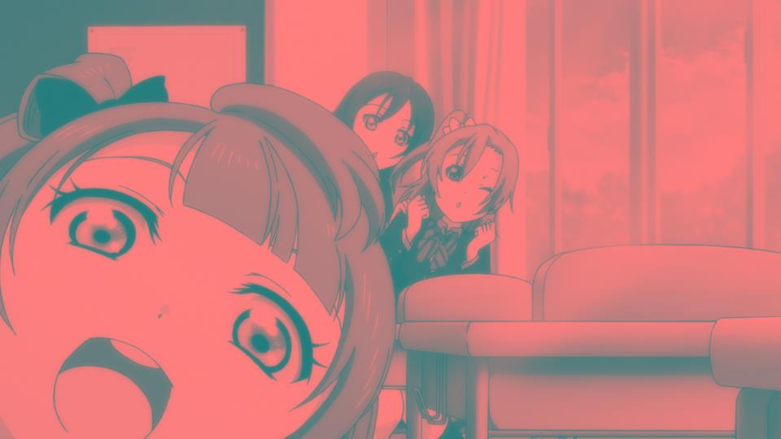
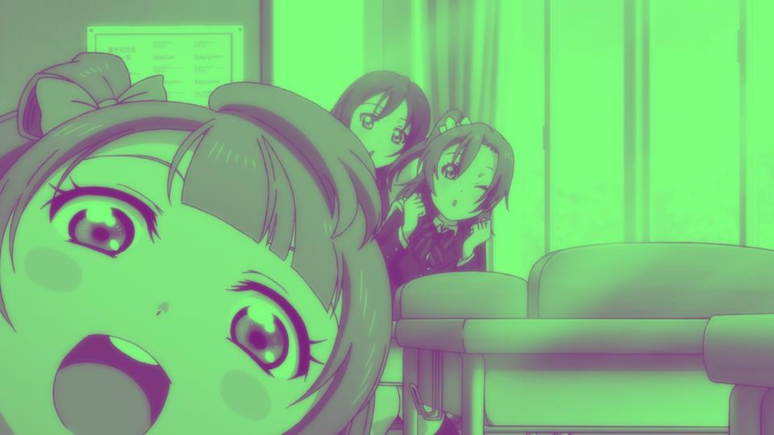
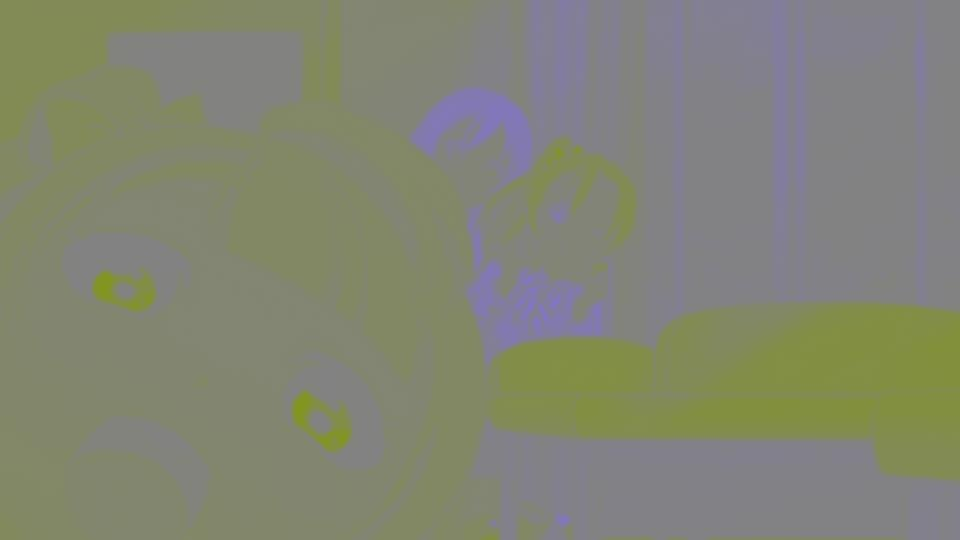
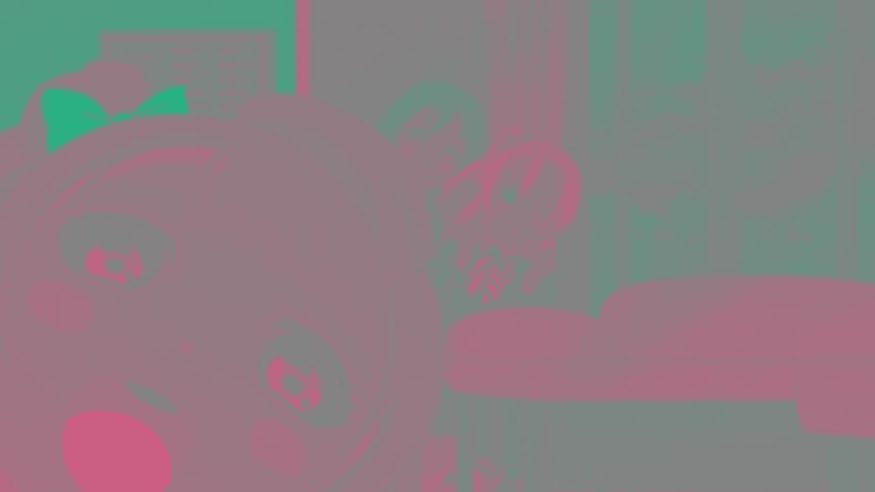
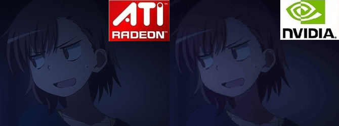
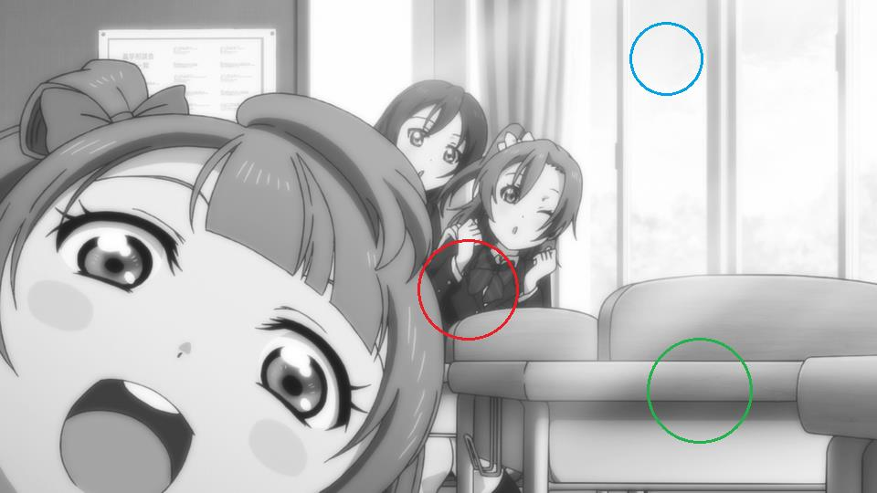
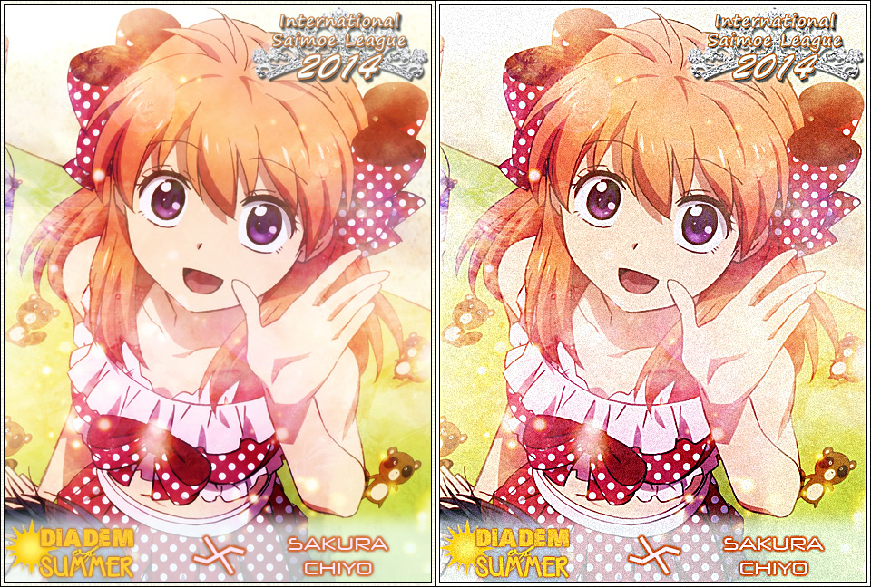
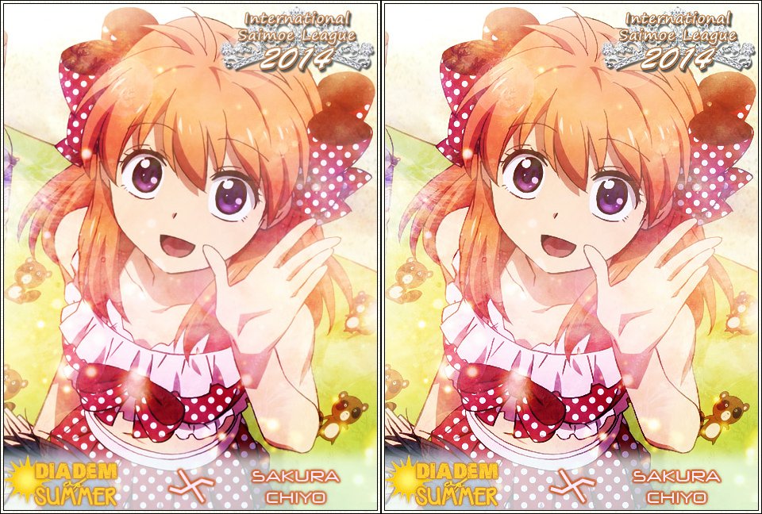

14-12-19 LittlePox VCB-Studio 初代队长/技术组组长
镜像源地址： https://vcb-s.com/archives/2726
这本来是群内写给队友做入门知识学习的，然后觉得挺适合改改贴出来向大家科普，所以就有了这篇教程。之前的两篇播放器教程可以算 1 和 2 吧。
本教程意在讲述一些视频音频制作的基础知识和术语，适合不了解压片原理的收片党们自学。它可以比较详细地回答以下常见的问题：
本教程将分以下模块详细叙述： 1.封装格式（MP4/MKV…）vs 媒体格式（H.264/FLAC/AAC…） 2.视频的基础参数：分辨率、帧率和码率 3.图像的表示方法：RGB 模型 vs YUV 模型 4.色深 5.色度半采样 6.空间上的低频与高频：平面、纹理和线条 7.时间上的低频与高频：动态 8.清晰度与画质简述
MP4+MKV是你下载的视频文件最常见的种类。这些文件其实类似一个包裹，它的后缀则是包裹的包装方式。这些包裹里面，包含了视频（只有图像），音频（只有声音），字幕等。当播放器在播放的时候，首先对这个包裹进行拆包（专业术语叫做分离/splitting）,把其中的视频、音频等拿出来，再进行播放。
既然它们只是一个包裹，就意味着这个后缀不能保证里面的东西是啥，也不能保证到底有多少东西。包裹里面的每一件物品，我们称之为轨道(track)，一般有这么些：
视频(Video): 一般来说肯定都有，但是也有例外，比如mka格式的外挂音轨，其实就是没视频的mkv。注意我们说到视频的时候，是不包括声音的。
音频(audio)：一般来说也肯定有，但是有些情况是静音的，就没必要带了。
章节(Chapter): 蓝光原盘中自带的分段信息。如果文件带上了，那么你可以在播放器中看到带章节的效果：
字幕(Subtitles)：有些时候文件自带字幕，并且字幕并非是直接整合于视频的硬字幕，那么就是一起被打包在封装容器中。
其他可能还有附件等，不一一列举。每个类型也不一定只有一条轨道，比如经常见到带多音轨的MKV。
每个轨道，都有自己的格式。比如大家常说的，视频是H.264，音频是AAC，这些就是每个轨道的格式。
视频的格式，常见的有H.264(可以细分为8bit/10bit)，H.265(当前也有8bit/10bit之分)，RealVideo(常见于早期rm/rmvb)，VC-1(微软主导的，常见于wmv)。基本上，H.264=AVC=AVC1, H.265=HEVC。
音频的格式，常见的有 FLAC/ALAC/TrueHD/DTS-HD MA这四种无损，和AAC/MP3/AC3/DTS(Core)这四种有损。
MKV vs MP4，主要的区别在于：
除此之外，这两个格式很大程度上可以互相代替。比如它们都支持封装AVC和HEVC，包括8bit/10bit的精度。所以MP4画质不如MKV好，这种论断是非常无知的——它们完全可以封装一样的视频。
为什么会有这样的分歧，就是历史原因了。MKV是民间研发，为了代替古老的AVI，从而更好地支持H264，它开发和修改的灵活度使得它可以兼容flac/ass这类非工业标准的格式；而MP4则是出生豪门，作为工业标准，替代更古老的MPG，作为新一代视频/音频封装服务的。
视频是由连续的图像构成的。每一张图像，我们称为一帧(frame)。图像则是由像素(pixel)构成的。一张图像有多少像素，称为这个图像的分辨率。比如说1920×1080的图像，说明它是由横纵1920×1080个像素点构成。视频的分辨率就是每一帧图像的分辨率。
一个视频，每一秒由多少图像构成，称为这个视频的帧率(frame-rate)。常见的帧率有24000/1001=23.976, 30000/1001=29.970, 60000/1001=59.940, 25.000, 50.000等等。这个数字是一秒钟内闪过的图像的数量。比如23.976，就是1001秒内，有24000张图像。视频的帧率是可以是恒定的(cfr, Const Frame-Rate)，也可以是变化的(vfr, Variable Frame-Rate)
码率的定义是视频文件体积除以时间。单位一般是Kbps(Kbit/s)或者Mbps(Mbit/s)。注意1B(Byte)=8b(bit)。所以一个24分钟，900MB的视频：
体积：900MB = 900MByte = 7200Mbit
时间：24min = 1440s
码率：7200/1440 = 5000 Kbps = 5Mbps
当视频文件的时间基本相同的时候（比如现在一集番大概是24分钟），码率和体积基本上是等价的，都是用来描述视频大小的参数。长度分辨率都相同的文件，体积不同，实际上就是码率不同。
码率也可以解读为单位时间内，用来记录视频的数据总量。码率越高的视频，意味着用来记录视频的数据量越多，潜在的解读就是视频可以拥有更好的质量。（注意，仅仅是潜在，后文我们会分析为什么高码率不一定等于高画质）
光的三原色是红(Red)、绿(Green)、蓝(Blue)。现代的显示器技术就是通过组合不同强度的三原色，来达成几乎任何一种可见光的颜色。图像储存中，通过记录每个像素红绿蓝强度，来记录图像的方法，称为RGB模型 (RGB Model)
常见的图片格式中，PNG和BMP这两种就是基于RGB模型的。
比如说原图：
分别只显示R G B通道的强度，效果如下：
 
三个通道下，信息量和细节程度不一定是均匀分布的。比如说可以注意南小鸟脸上的红晕，在3个平面上的区分程度就不同——红色平面下几乎无从区分，造成区别的主要是绿色和蓝色的平面。外围白色的脸颊，三色都近乎饱和；但是红晕部分，只有红色饱和，绿色和蓝色不饱和。这是造成红色凸显的原因。
除了RGB模型，还有一种广泛采用的模型，称为YUV模型，又被称为亮度-色度模型（Luma-Chroma）。它是通过数学转换，将RGB三个通道，转换为一个代表亮度的通道(Y,又称为Luma)，和两个代表色度的通道(UV，并成为Chroma)。
举个形象点的例子：一家养殖场饲养猪和牛，一种记数方式是：（猪的数量，牛的数量）
但是也可以这么记录：（总数量=猪的数量+牛的数量，相差=猪的数量-牛的数量）。两种方法之间有数学公式可以互转。
YUV模型干的是类似的事儿。通过对RGB数据的合理转换，得到另一种表示方式。YUV模型下，还有不同的实现方式。举个用的比较多的YCbCr模型：它把RGB转换成一个亮度(Y)，和 蓝色色度(Cb) 以及 红色色度(Cr)。转换背后复杂的公式大家不需要了解，只需要看看效果：
只有亮度通道：
只有蓝色色度：

只有红色色度：

在图像视频的加工与储存中，YUV格式一般更受欢迎，理由如下：
1、人眼对亮度的敏感度远高于色度，因此人眼看到的有效信息主要来自于亮度。YUV模型可以将绝大多数的有效信息分配到Y通道。UV通道相对记录的信息少的多。相对于RGB模型较为平均的分配，YUV模型将多数有效信息集中在Y通道，不但减少了冗余信息量，还为压缩提供了便利
2、保持了对黑白显示设备的向下兼容
3、图像编辑中，调节亮度和颜色饱和度，在YUV模型下更方便。
几乎所有的视频格式，以及广泛使用的JPEG图像格式，都是基于YCbCr模型的。播放的时候，播放器需要将YCbCr的信息，通过计算，转换为RGB。这个步骤称为渲染（Rendering）
每个通道的记录，通常是用整数来表示。比如RGB24，就是RGB各8个bit，用0~255 (8bit的二进制数范围)来表示某个颜色的强弱。YUV模型也不例外，也是用整数来表示每个通道的高低。
色深(bit-depth)，就是我们通常说的8bit和10bit，是指每个通道的精度。8bit就是每个通道用一个8bit整数(0~255)代表，10bit就是用10bit整数(0~1023)来显示。16bit则是0~65535
(注意，上文的表述是不严谨的，视频在编码的时候，并非一定能用到0~255的所有范围，而是可能有所保留，只用到一部分，比如16~235。这我们就不详细展开了)
你的显示器是8bit的，代表它能显示RGB每个通道0~255所有强度。但是视频的色深是YUV的色深，播放的时候，YUV需要通过计算转换到RGB。因此，10bit的高精度是间接的，它使得运算过程中精度增加，以让最后的颜色更细腻。
如何理解8bit显示器，播放10bit是有必要的呢：
一个圆的半径是12.33m, 求它的面积，保留两位小数。
半径的精度给定两位小数，结果也要求两位小数，那么圆周率精度需要给多高呢？也只要两位小数么？ 取pi=3.14, 面积算出来是477.37平方米 取pi=3.1416，面积算出来是477.61平方米 取pi精度足够高，面积算出来是477.61平方米。所以取pi=3.1416是足够的，但是3.14就不够了。
换言之，即便最终输出的精度要求较低，也不意味着参与运算的数字，以及运算过程，可以保持较低的精度。在最终输出是8bit RGB的前提下，10bit YUV比起8bit YUV依旧具有精度优势的原因就在这里。事实上，8bit YUV转换后，覆盖的精度大概相当于8bit RGB的26%，而10bit转换后的精度大约可以覆盖97%——你想让你家8bit显示器发挥97%的细腻度么？看10bit吧。
8bit精度不足，主要表现在亮度较低的区域，容易形成色带：

注意这图右边那一圈圈跟波浪一样的效果。这就是颜色精度不足的表现。
10bit的优势不只在于显示精度的提高，在提高视频压缩率，减少失真方面，相对8bit也有优势。这方面就不展开了。
在YUV模型的应用中，Y和UV的重要性是不等同的。图像视频的实际储存和传输中，通常将Y以全分辨率记录，UV以减半甚至1/4的分辨率记录。这个手段被称为色度半采样(Chroma Sub-Sampling)。色度半采样可以有效减少传输带宽，和加大UV平面的压缩率，但是不可避免的会损失UV平面的有效信息。
我们平常的视频，最常见的是420采样。配合YUV格式，常常被写作yuv420。这种采样是Y保留全部，UV只以(1/2) x (1/2)的分辨率记录。比如说1920×1080的视频，其实只有亮度平面是1920×1080。两个色度平面都只有960×540的分辨率。
当然了，你也可以选择不做缩减。这种称为444采样，或者yuv444。YUV三个平面全是满分辨率。
在做YUV->RGB的时候，首先需要将缩水的UV分辨率拉升到Y的分辨率（madVR中允许自定义算法，在Chroma Upscaling当中），然后再转换到RGB。做RGB->YUV的转换，也是先转换到444（YUV的分辨率相同），再将UV分辨率降低。
一般能拿到的片源，包括所有蓝光原盘，都是420采样的。所以成品一般也保留420采样。所以yuv420就表示这个视频是420采样的yuv格式。
将420做成444格式，需要自己手动将UV分辨率拉升2×2倍。在今天madVR等渲染器可以很好地拉升UV平面的情况下，这种做法无异于毫无必要的拉升DVD做成伪高清。
当然了，有时候也需要在444/RGB平面下做处理和修复，常见的比如视频本身RGB平面不重叠（比如摩卡少女樱），这种修复过程首先要将UV分辨率拉升，然后转RGB，做完修复再转回YUV。修复后的结果相当于全新构图，这种情况下保留444格式就是有理由，有必要的。
H264格式编码444格式，需要High 4:4:4 Predictive Profile（简称Hi444pp）。所以看到Hi444pp/yuv444 之类的标示，你就需要去找压制者的陈述，为什么他要做这么个拉升。如果找不到有效的理由，你应该默认作者是在瞎做。
在视频处理中，空间(spatial)的概念指的是一帧图片以内（你可以认为就是一张图所呈现的二维空间/平面）。跟时间(temporal)相对；时间的概念就强调帧与帧之间的变换。
于是我们重新来看这张亮度的图：

亮度变化较快，变动幅度大的区域，我们称之为高频区域。否则，亮度变化缓慢且不明显的区域，我们称为低频区域。
图中的蓝圈就是一块典型的低频区域，或者就叫做平面（平坦的部分）。亮度几乎没有变化
绿圈中，亮度呈现跳跃式的突变，这种高频区域我们称之为线条。
红圈中，亮度频繁变化，幅度有高有低，这种高频区域我们称为纹理。
有时候，线条和纹理（高频区域）统称为线条，平面（低频区域）又叫做非线条。
这是亮度平面。色度平面，高频低频，线条等概念也同样适用，就是描述色度变化的快慢轻重。一般我们所谓的“细节”，就是指图像中的高频信息。
一般来说，一张图的高频信息越多，意味着这张图信息量越大，所需要记录的数据量就越多，编码所需要的运算量也越大。如果一个视频包含的空间性高频信息很多（通俗点说就是每一帧内细节很多），意味着这个视频的空间复杂度很高。
记录一张图片，编码器需要决定给怎样的部分多少码率。码率在一张图内不同部分的分配，叫做码率的空间分配。分配较好的时候，往往整幅图目视观感比较统一；分配不好常见的后果，就是线条纹理尚可，背景平面区域出现大量色带色块（码率被过分的分配给线条）；或者背景颜色过渡自然，纹理模糊，线条烂掉（码率被过分的分配给非线条）。
在视频处理中，时间(temporal)的概念强调帧与帧之间的变换。跟空间(spatial)相对。
动态的概念无需多解释；就是帧与帧之间图像变化的强弱，变化频率的高低。一段视频如果动态很高，变化剧烈，我们称为时间复杂度较高，时域上的高频信息多。否则如果视频本身舒缓多静态，我们称为时间复杂度低，时域上的低频信息多。
一般来说，一段视频的时域高频信息多，动态的信息量就大，所需要记录的数据量就越多，编码所需要的运算量也越大。但是另一方面，人眼对高速变化的场景，敏感度不如静态的图片来的高（你没有时间去仔细观察细节），所以动态场景的优先度可以低于静态场景。如何权衡以上两点去分配码率，被称为码率的时间分配。分配较好的时候，看视频无论动态还是静态效果都较好；分配不好的时候往往是静态部分看着还行，动态部分糊烂掉；或者动态部分效果过分的好，浪费了大量码率，造成静态部分欠码，瑕疵明显。
很多人喜欢看静止的截图对比，来判断视频的画质。从观看的角度，这种做法其实并不完全科学——如果你觉得比较烂的一帧其实是取自高动态场景，那么这一帧稍微烂点无可厚非，反正观看的时候你注意不到，将码率省下来给静态部分会更好。
我们经常讨论，一个视频清晰度如何，画质好不好。但是如何给这两个术语做定义呢？
经常看到的说法：“这个视频清晰度是1080p的”。其实看过上文你就应该知道，1080p只是视频的分辨率，它不能直接代表清晰度——比如说，我可以把一个480p的dvd视频拉升到1080p，那又怎样呢？它的清晰度难道就提高了么？
一个比较接近清晰度的概念，是上文所讲述的，空间高频信息量，就是一帧内的细节。一张图，一个视频的细节多，它的清晰度就高。分辨率决定了高频信息量的上限；就是它最清晰能到什么地步。1080p之所以比480p好，是因为它可以允许图像记录的高频信息多。这个说法看样子很靠谱，但是，有反例：

右图的高频信息远比左图多——它的线条很锐利，有大量致密的噪点（注意噪点完全符合高频信息的定义；它使得图像变化的非常快） 但是你真的觉得右图清晰度高么？ 事实上，右图完全是通过左图加工而来。通过过度锐化+强噪点，人为的增加无效的高频信息。
所以清晰度的定义我更倾向于这样一个说法：图像或视频中，原生、有效的高频信息。 原生，强调这种清晰度是非人工添加的；有效；强调细节本身有意义，而不是毫无意义的噪点特效。
值得一提的是，人为增加的高频信息不见得完全没有帮助。有的时候适度锐化的确能够起到不错的目视效果：

这是一幅适度锐化后的效果。如果有人觉得右图更好，至少某些部分更好，相信我，你不是一个人。所以适度锐化依旧是视频和图像处理中，可以接受的一种主观调整的手段，一定的场合下，它确实有助于提高目视效果。
以上是清晰度的概述。注意，清晰度只是空间方面（就是一帧以内）。如果再考虑到动态效果的优秀与否（视频是不是那种一动起来就糊成一团的，或者动起来感觉卡顿明显的，常见于早起RMVB），空间和时间上优秀的观看效果共同定义了画质。所以我们说madVR/svp那些倍帧效果有助于提高画质，实际上它们增强了时间上的观看效果。
好的画质，是制作者和观众共同追求的。怎么样的视频会有好的画质呢？是不是码率越高的视频画质越好呢？真不见得。视频的画质，是由以下几点共同决定的：
俗话说的好，上梁不正下梁歪。如果源的画质本身很差，那么再如何折腾都别指望画质好到哪去。所以压制者往往会选择更好的源进行压制——举个栗子，BDRip一般都比TVRip来的好，哪怕是720p。蓝光也分销售地区，一般日本销售的日版，画质上比美版、台版、港版啥的都来得好，所以同样是BDRip，选取更好的源，就能做到画质上优先一步。
观众是否用了足矣支持高画质播放的硬件和软件。这就是为啥我们在发布Rip的同时大力普及好的播放器；有时候一个好的播放器胜过多少在制作方面的精力投入。
视频的时间和空间复杂度，并称为编码复杂度。编码复杂度高的视频，往往细节多，动态高（比如《魔法少女小圆剧场版 叛逆的物语》），这样的视频天生需要较高的码率去维持一个优秀的观看效果。 相反，有些视频编码复杂度低（比如《请问今天要来点兔子么》，动态少，线条细节柔和），这种视频就是比较节省码率的。
同样多的码率，能起到怎样好的效果，被称为效率。比如H264就比之前的RealVideo效率高；10bit比8bit效率高；编码器先进，参数设置的比较合理，编码器各种高端参数全开（通常以编码时间作为代价），码率效率就高。 合理度就是码率在时空分配方面合理与否，合理的分配，给观众的观看效果就比较统一协调。 码率分配的效率和合理度，是对制作者的要求，要求制作者对片源分析，参数设置有比较到位的理解。
码率分配和合理度做的好，就常常能做出低码率高画质的良心作品。
这里再多提一句，至少在这个时间点，也就是此文发布的2014年年底，HEVC相对于AVC可以提高50%的效率，依旧是一个纸面上的理论值。实际操作中，因为HEVC编码器的成熟度远不及经过了十几年发展的AVC编码器，导致现在HEVC的潜力远没有能发挥出来，特别是高画质下甚至不如。 对于目前主流的，定位收藏画质的BDRip，同样码率下x265的画质相对于x264没有优势；所以在近期，大家不用优先的去下载HEVC版作为收藏目的，更不必迷信什么“码率降低一半”。再强调一次，这个时间点；如果一年后以上陈述被不断进步的HEVC编码器推翻，我毫不惊讶。
①，客观修复。强调修复片源固有的瑕疵，比如锯齿，色带，晕轮等等。 ②，主观调整，强调将片源调整的更适合人眼观看，比如适度的锐化，调色（有时候你是可以通过科学方法判定片源的颜色有问题，然后针对的做修复的）。 ③，移除无效高频信息，比如降噪，避免码率浪费在无效的噪点上
预处理做的好，往往能达到画质上超越片源，或是在几乎不牺牲清晰度的前提下，节省码率开销。
但是预处理是一把双刃剑，优化的同时，可能引入副效果。降噪、抗锯齿、去晕轮等操作会不可避免的损失一些有效细节（或多或少，取决于制作者水准）；主观调整很可能会引入副效果（比如过度锐化会导致锯齿和晕轮），或是变成了作者的自我满足，形成对观众的欺骗。
综上，一个优秀的画质，是由片源、制作者、观看者共同决定的；码率高低也只是部分因素，并非决定性的效果。
于是这篇教程就写到这里吧。它最初的目的是给学习视频制作入门的人而写，也不知道对于一般的观众，能让大家理解多少。有啥需要交流讨论提问的就在下文回复吧。如果反响较好，以后我们还会发布更多这样科普教学类的文章。